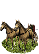
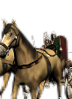

RTR: Imperium Surrectum
RTR: Imperium SurrectumBrittonic Chariots


Class: heavy · Category: cavalry · Men per unit: 12
Description
Celtic chariots were a form of warfare that the Romans had serious problems with. It took them some time to find a way of dealing' with the devastating effect the chariot had. Polybius, in his accounts of the lead up to the battle of Telamon in 225 BC, reports that the Gauls had 20,000 cavalry and chariots. This was the last reference to the use of chariots on the mainland. By the time Caesar encountered them in Britain, the method of fighting against the chariot had been forgotten. Diodorus said that the chariot was drawn by two horses and could carry a driver and a warrior. The charioteer sat in the open front of the chariot and actually drove. The warrior stood behind the charioteer and threw his spears from the chariot before alighting and fighting on foot.
Stats
| Rank in roster | Rank in roster | Rank in roster | Rank in roster | ||||||||
|---|---|---|---|---|---|---|---|---|---|---|---|
| Men per unit | 12 | █········· 6% | Attack | 14 | ███████··· 72% | Charge bonus | 8 | ███······· 31% | Defence | 22 | ██········ 24% |
| · armour | 2 | █········· 13% | · defence skill | 16 | ███······· 28% | · shield | 4 | █████····· 49% | Morale | 15 | █████████· 90% |
| Discipline | Normal | Training | Untrained | Recruitment cost | 2,406 dn | ███████··· 66% | Upkeep per turn | 881 dn | ████████·· 84% | ||
| Turns to recruit | 3 |
Weapons
Its secondary attack is the stronger one: 27 against 14.
| Primary | Secondary | Primary | Secondary | Primary | Secondary | Primary | Secondary | ||||
|---|---|---|---|---|---|---|---|---|---|---|---|
| Attack | 14 | 27 | Charge bonus | 8 | 43 | Type | thrown · blade | melee · other | Damage | piercing | blunt |
| Projectile | javelin | — | Range | 50 | — | Ammunition | 7 | — | Properties | Thrown | May throw men into the air |
Defence
| Primary | Secondary | Primary | Secondary | Primary | Secondary | Primary | Secondary | ||||
|---|---|---|---|---|---|---|---|---|---|---|---|
| Total | 22 | — | Armour | 2 | 14 | Defence skill | 16 | 2 | Shield | 4 | — |
Condition and terrain
| Hit points | 1 · celtic light chariot 4 | Mount | celtic light chariot | Modifier against mounts | horse -35 · chariot -35 | Ground: scrub / sand / forest / snow | -7 / -2 / -8 / -2 |
| Charge distance | 60 | Formations | Square |
Technical stats
| Time between blows (primary / secondary) | 2.5 s / 2.5 s | Extra fatigue in hot climates | 2 | Spacing between men: close / loose | 10 × 12 m / 15 × 18 m | Default ranks | 2 |
In battle: Frighten nearby enemy infantry
Who can recruit it
A core roster unit for 10 factions, each able to raise it anywhere they hold the right building:
Brigantes · Caledonii · Cantiaci · Catuvellauni · Dumnonii · Durotriges · Iverni · Ordovices · Silures · Trinovantes
Exactly what a settlement must have, route by route (3)
| Building | Also requires | Building | Also requires | Building | Also requires | ||
|---|---|---|---|---|---|---|---|
| Indirect Rule | Tier 2 Military Industrial Complex · Tier 1 Colony · Requires horses resource, if not available locally you can build Fine Horse Exports to supply it | Direct Rule | Tier 2 Military Industrial Complex · Tier 1 Colony · Requires horses resource, if not available locally you can build Fine Horse Exports to supply it | Homeland | Tier 2 Military Industrial Complex |